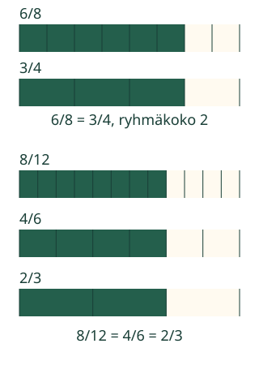
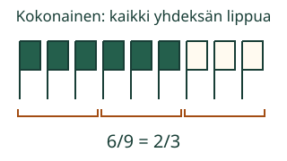

Voiko samalle osuudelle antaa uuden nimen?
Loikka kehystää nauhan osat pareiksi. Merkittyä nauhaa ei lisätä eikä poisteta.
Yhdistän osia ryhmiksi. Murtoluvun arvo säilyy.
Pienistä osista suurempiin ryhmiin
Jaa nauha kahdeksaan yhtä suureen osaan. Merkitse kuusi. Kehystä kaikki osat pareiksi, myös vaalealla alueella. Neljästä ryhmästä kolme on merkitty.

Voi edetä usealla askeleella
8/12 = 4/6 = 2/3. Neljä kuudesosaa on jo kelvollinen askel. Vielä voi yhdistää osat pareiksi. Voit myös koota alkuperäiset osat suoraan neljän ryhmiksi: 8/12 = 2/3.
Ansakohta: luvut pienenevät, mutta arvo ei
6/8 ei muutu 5/7:ksi vain vähentämällä molemmista yksi. Myöskään 8/12:n muuttaminen 4/12:ksi ei säilytä merkittyä osuutta. Supistamisessa molemmat luvut jaetaan samalla yhteisellä kokonaisluvulla.
Kokoa ryhmät itse
Ennusta: muuttuuko merkitty osuus, kun ryhmittelet kaikki vanhat osat samalla tavalla? Valitse ryhmäkoko ja kokoa ryhmät. Voit perua edellisen ryhmittelyn mallin ”Edellinen vaihe” -painikkeesta.
Kirjoita ryhmittelyä vastaava merkintä
Käytä kokonaislukuja 0–48. Nimittäjä vähintään 1.
Yksi kelvollinen supistusaskelkin käy.
Apua: jaa molemmat samalla luvulla
Laske, montako vanhaa osaa mahtuu jokaiseen yhtä suureen ryhmään. Ryhmäkoon pitää jakaa tasan sekä merkittyjen että kaikkien osien määrä. Esimerkiksi 12/18:sta voi aloittaa ryhmäkoolla 2, 3 tai 6. Jatka halutessasi, kunnes yhteistä ryhmäkokoa ei enää löydy.
Uusi tilanne: lippujen joukko
Kokonainen on kaikki yhdeksän lippua. Kuusi on merkitty. Kokoa liput kolmen ryhmiksi niin, että ryhmässä on vain merkittyjä tai vain vaaleita lippuja. Kolmesta ryhmästä kaksi on merkitty: 6/9 = 2/3.

Lisätutkimus: eri reitit, sama luku
Kokeile alla 12/18:aa ensin kahden ja sitten kolmen ryhmillä. Palauta mallin alku ja kokeile ensin kolmen, sitten kahden ryhmiä. Voit myös valita suoraan kuuden ryhmät. Lopputulos on aina 2/3. Sama arvo ei tarkoita, että vain yksi reitti kelpaisi.
2/3 on jo loppuun supistettu: molempia lukuja ei voi jakaa tasan samalla kokonaisluvulla, joka on suurempi kuin 1. Yhdellä jakaminen jättäisi merkinnän ennalleen.
Tutki 12/18:n supistusreittejä
Malli on ilman JavaScriptiä alkuperäisessä kohdassaan: avaa mallin kohta.
Opettajalle: supistamisen merkitys ja rajat
Vuosiluokat 3–6. Vaadittu M-FRAC-06 on samanarvoisuuden ydin. M-DIVIS-01 tukee yhteisen jakajan etsimistä, mutta sen erillistä hallintaa ei vaadita. Pienet ryhmät voi laskea kuvasta. Aikuinen voi lukea ja auttaa ryhmittelyssä; ei esineiden nimeämis- tai puhekuittausporttia.
Ryhmittelyä havainnollistava nauha on yhtä suuri koko ajan. Merkittyä ja vaaleaa aluetta ei saa sekoittaa yhden ryhmän sisällä. Uusi osa on kokonainen määrä vanhoja osia. Fyysinen paperi ei veny eikä kutistu. Alkuperäisten jakoviivojen näyttö on apu, ei vastauksen muutos.
Vastaus saa olla mikä tahansa yhdellä tai useammalla yhteisellä kokonaislukujakajalla syntyvä pienemmän nimittäjän merkintä. Esimerkiksi 4/6 lähtöön 8/12 hyväksytään kelvollisena väliaskeleena. Jos merkintä on jo loppuun supistettu, sama merkintä hyväksytään. Muu samanarvoinen esitys tunnistetaan samaksi arvoksi, vaikka se ei toteuttaisi tässä pyydettyä kokonaisten vanhojen osien ryhmittelyä; sitä ei kutsuta eri luvuksi.
Offline: kehystä samanlevyisen suikaleen osat ja vertaa värin loppukohtaa. Eri muotoiset saman pinta-alan osat ovat mahdollisia; suorakulmiot tekevät aloituksesta selkeän. Näytön ryhmittely ei todenna käsin rakentamista, omaa selitystä tai kaikkia murtolukujen taitoja. Pienet yhden kokonaisen osat ovat tämän opetuksen rajaus; osoittaja ei yleisesti aina ole nimittäjää pienempi.
Paikallinen tarkistus tukee harjoittelua. Ei pisteitä, tallennusta, henkilöhistoriaa tai itsenäisen/viivästetyn/formaalin hallinnan päätelmää. Harjoituksen merkinnän tai lähtötehtävän muutos poistaa sen vanhan palautteen. Erillinen mallin tutkiminen ja apu säilyttävät sen. Ilman JavaScriptiä alkuperäiset kuvat ja paperitehtävä säilyvät.
Lopuksi
Mikä muuttui 6/8:n muuttuessa 3/4:ksi? Mikä säilyi? Näytä paperilla, osoita tai kerro.